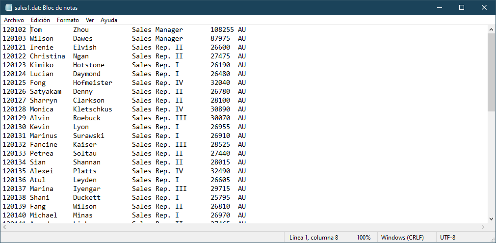
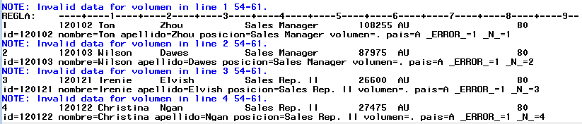
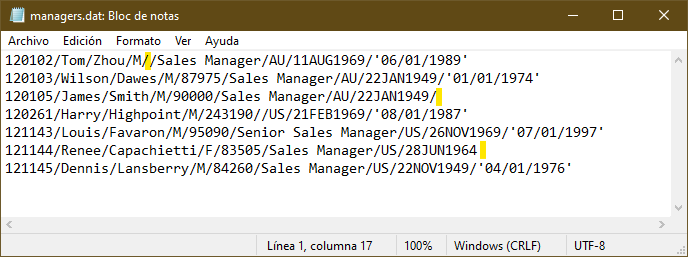
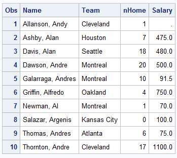
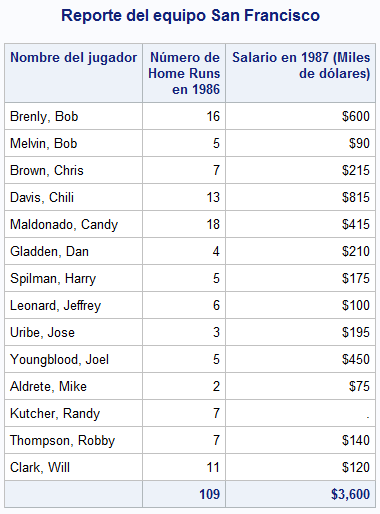
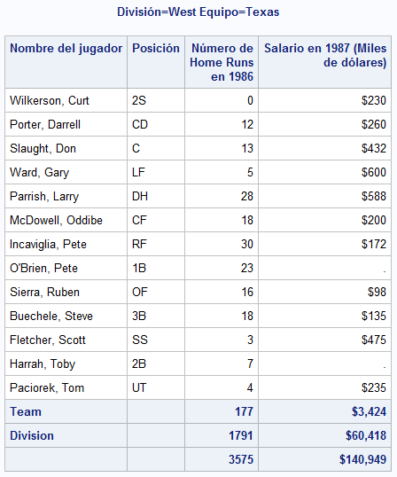
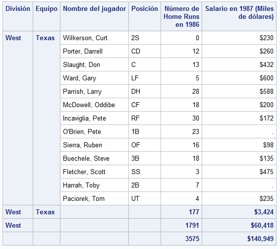

SAS nivel básico
En esta sección se presentan temas para comenzar con la lectura y procesamiento de datos, así como la creación de reportes y agregados que permitan tner una idea general de los datos que se están trabajando.
Lectura de datos¶
Los dataset son el insumo principal para analisis de datos en SAS, por ello iniciaremos con una rápida exploración.
La creación de un dataset inicia con un bloque DATA y termina con un RUN.
Introducción de valores de forma manual¶
La forma más fácil de crear un dataset, es con el uso de la sentencia INPUT y DATALINES con el fin de introducir valores manualmente. Estos datos fueron copiados y pegados directamente de una hoja de excel.
El siguiente ejemplo muestra como introducir datos manualmente.
1 2 3 4 5 6 7 8 9 10 11 12 13 14 15 16 17 18 19 20 21 22 23 24 25 26 27 | |
La sentencia DATA especifica el nombre del dataset y entre parentesis están las opciones del dataset, en este caso el dataset empleados tendrá una etiqueta para identificarlo.
Es recomendable especificar las propiedades de las variables a crear mediante la sentencia ATTRIB en donde se especifican sus propiedades. Nótese que para el caso de las variables de tipo caracter se hace uso de la opción LENGTH = seguido del signo de pesos para indicar que es de tipo caracter y la longitud deseada. Para el caso de variables numéricas, se debe especificar al menos un atributo, en este caso se recomienda especificar el atributo LABEL =. En el caso de la variable fnac los datos estan almacenados en formato de fecha (ddmmyyyy) por lo que se usa el informato ddmmyy10. para que lo reconozca como fehca de sas, pero se desea visualizar con el formato de fecha (ddmmmyyyy).
La sentencia INPUT sirve para indicar el nombre de las variables del dataset. Se puede poner el símbolo $ para indicar que la variable es de tipo caracter. Sin embargo en este caso, como ya se han declarado las variables se puede usar una lista, es decir, solo poner el nombre de la primer variable declarada seguido de dos guiones -- y el nombre de la última.
La sentencia DATALINES indica el inicio de los datos y finaliza con un punto y coma.
Con la sentencia RUN se cierra el bloque de instrucciones y comienza a ejecutar el proceso.
Lectura de datos desde un archivo externo¶
SAS puede leer datos de archivos de texto almacenados en distintos formatos, por ejemplo de ancho fijo o delimitados. Para acceder a ellos es necesario usar la referencia para a puntar a ellos, algo similar a la declaración de las librerías.
Se puede hacer mediante la sentencia FILENAME:
FILENAME fileref ‘nombre-archivo’;
donde fileref es un nombre sas que hará referencia a un archivo y nombre-archivo es el nombre de un archivo físico externo que incluye tanto la ruta como el nombre con su extensión.
Por ejemplo la siguiente sentencia asigna con el nombre archivo al archivo “datos” almacenados en formato .dat que estan en la carpeta proyectos.
1 | |
También será necesario usar la sentencia INFILE. Esta sentencia le da las espeficicaciones a SAS sobre cómo leer archivos externos. Para una mayor referencia consulte la sentencia INPUT.
Lectura de un archivo de ancho fijo¶
En ocasiones se tienen los datos almacenados en formato de texto pero los datos estan alineados de tal forma que es posible saber en que posición inicia cada variable.

El ejemplo anterior muestra un ejemplo de un archivo de texto de ancho fijo, obsérvese que el id comienza en la columna 1 mientras que el nombre inicia en la columna 8.
El siguiente código muestra cómo leer datos de un archivo de ancho fijo.
1 2 3 4 | |
La diferencia con ejemplos anteriores es la sentencia INFILE. Esta sentencia especifica que se va leer un archivo externo y se usa junto con la sentencia INPUT.
En la sentencia INPUT se declaran las variables que va a contener el dataset VENTAS. SAS leerá el archivo línea por línea y almacenará los valores que encuentre en la variable declarada según la posición indicada, por ejemplo los valores que encuentre de la línea 1 a la 7 se guardarán en la variable ID, mientras que los valores de la columna 8 a la 18 se almacenarán en la variable NOMBRE, nótese que después de NOMBRE hay un signo de pesos, esto es para indicar que la variable es de tipo caracter.
Cuidado con las posiciones de columna
Se debe ser muy cuidadoso al especificar la posición de las columnas para no mezclar los valores.
En el ejemplo anterior, si se hubiera declarado VOLUMEN 54 - 61, SAS hubiera considerado la columna 61 y nos mostraría un mensaje en el log:

Debido a que la columna 61 contiene a la letra A, SAS estaría almacenando una cadena en una variable numérica, por lo que lo que nos mostraría el error y finalmente le asignaría un valor missing a volumen.
Una forma alternativa de declarar las variables en la sentencia sería usar el siguiente código:
1 2 3 4 | |
Note que en la sentencia INPUT se declaran a las variables de tipo caracter de dos formas: por posición (ejemplo APELLIDO $ 19-33) y por formato (ejemplo NOMBRE $10.).
Para una mayor referencia consulte leyendo datos en bruto en la documentación de SAS.
Lectura de un archivo de texto delimitado¶
El delimitador predeterminado es un espacio en blanco. Sin embargo, los archivos de texto delimitados por otros caracteres (por ejemplo una coma, tabulador, o símbolos especiales) tambien pueden ser leídos por SAS. Para especificar el tipo de delimitador, se utiliza la opción DLM = en la sentencia INFILE.
Considere el siguiente archivo de texto. Puede notarse que está delimitado por el caracter “/” y además tiene datos perdidos (resaltados en amarillo). De hecho, los valores perdidos al final de la línea podrían hacer que SAS terminara antes de leer los datos.

El siguiente código puede ser usado para leer esos datos.
1 2 3 4 5 6 7 8 9 10 11 12 13 14 15 | |
La opción DSD es útil cuando hay un valor faltante en datos delimitados, de otra forma SAS no reconocería dos delimitadores juntos y no leería los datos correctamente.
La opción MISSOVER evita que SAS salte a una nueva linea cuando no encuentra valores válidos y asigna valores faltantes a las variables que no encuentre. TRUNCOVER funciona de manera similar a MISSOVER pero la diferencia radica en que asignaría los valores que encuentre pasando el fin de línea.
Leyendo archivos desde web¶
Un ejemplo para descargar datos de covid se encuentran en el siguiente programa de sas: datos_covid_web.sas.
Usando un procedimiento para leer datos externos¶
Creación de reportes¶
SAS es una herramienta muy útil para crear reportes de datos, algunos de ellos se pueden personalizar o adaptarlos a distintas necesidades.
Reportes básicos¶
El reporte más simple que se puede crear, es mostrar el conjunto de datos usando el procedimiento PROC PRINT.
Sin embargo, para datasets muy grandes, esto no sería una buena opción debido a que SAS gastaría muchos recursos en imprimir toda la tabla. Se pueden usar ciertas configuraciones para que SAS solo procece cierta cantidad de observaciones de un dataset.
La primera de ellas es mediante las opciones generales, la cual afectaría a todos los procedimientos durante la sesión o mediante las opciones de dataset la cual solo aplica durante ese procedimiento. Para una referencia completa sobre las opciones generales, visite el diccionario de opciones del sistema y para las opciones de dataset vea el diccionario de opciones de datasets.
El siguiente ejemplo muestra las primeras diez observaciones del conjunto de datos de baseball, pero solo pedimos que muestre ciertas variables.
1 2 3 | |
Produce el siguiente resultado

Un reporte con seleccionando casos con total¶
PROC PRINT tambien tiene diversas sentencias para hacer reportes más completos o específicos.
1 2 3 4 5 6 7 8 9 10 11 12 13 | |
El anterior ejemplo muestra un reporte que incluye el nombre de todos los jugadores del equipo San Francisco, número de home run ysu salario; al final del reporte se presenta el gran total de estas variables. En este ejemplo se modificaron las etiquetas y los formatos, pero sólo para el reporte mediante las sentencias LABEL y FORMAT y se seleccionaron las observaciones que cumplieran cierto criterio.
La opción NOOBS en la sentencia DATA pide no imprimir el número de observación del dataset y con la opción LABEL se mostrarán las etiquetas de las variables.
La sentencia VAR especifica las variables a mostrar.
La sentencia WHERE selecciona las observaciones que cumplan la condición de que el equipo sea igual a San Francisco.
La sentencia FORMAT le asigna a la variable SALARY el formato DOLLAR12..
LABEL especifica las etiquetas de las variables en el reporte. En caso de que las variables del dataset ya tengan etiquetas, estas etiquetas definidas prevalecen en el reporte.
La sentencia SUM es la que especifica las variables que mostrarán el gran total. Finalmente se agrega la opción TITLE para que se le ponga un título al reporte y se vuelve a llamar al final para que vuelva a su valor inicial.

Reporte con subtotales¶
Es posible mostrar los reportes con subtotales por grupos de variables.
Datos agrupados
Los datos se deberían ordenar por la variables que se desee hacer el agrupamiento para evitar posibles errores en los cálculos. SAS considera valores iguales de la variable de agrupamiento como un bloque. Si SAS encontrara una observación con un valor que ya procesó, se generará un error.
Se puede usar el procedimiento SORT para ordenar una dataset por las variables que se deseen y posteriormente realizar el reporte.
1 2 3 4 5 6 7 8 9 10 11 12 13 14 15 16 17 | |
El procedimiento SORT especifica que se ordene por las variables division y luego por team y se pide que se guarde una copia temporal, con el fin de no modificar el dataset original.
En el procedimiento PRINT se usa la sentencia BY para que crear el reporte por combinaciones de valores de division y team.

La imagen anterior muestra el ultimo grupo de variables (División = West y Equipo = Texas). Nótese que este grupo contiene los subtotales tanto de las variables team y division así como el gran total. Cada grupo contiene como título el valor de las variables division y team.
Tip
Se pueden agregar en la sentencia PROC PRINT las opciones SUMLABEL = y GRANDTOTAL_LABEL = para personalizar las etiquetas de subtotales y el gran total.
Si se desea mostrar un reporte con otro estilo resaltando las variables de agrupamiento, se puede agregar la sentencia.
ID DIVISION TEAM;
El resultado es el siguente.
